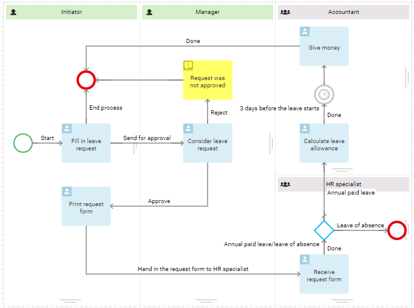
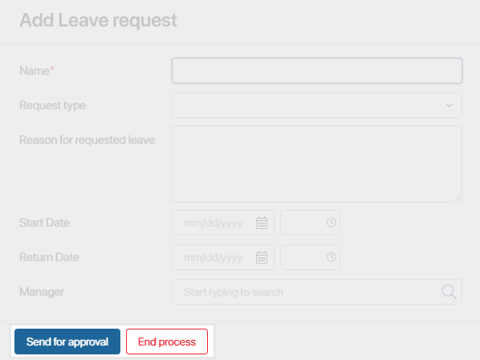
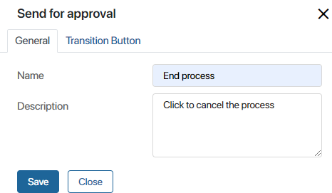
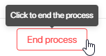
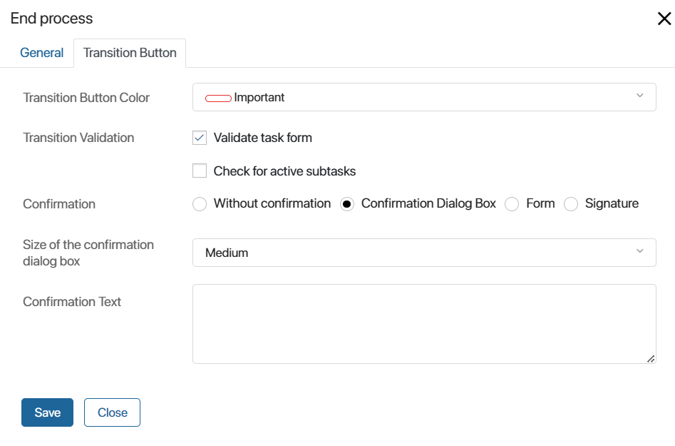
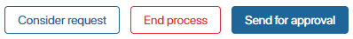
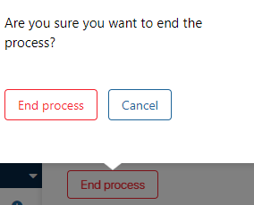
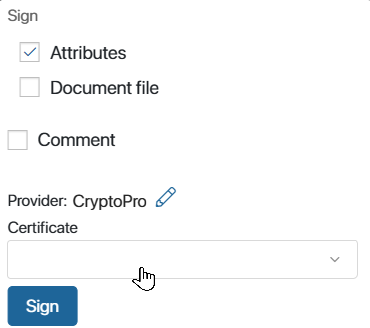
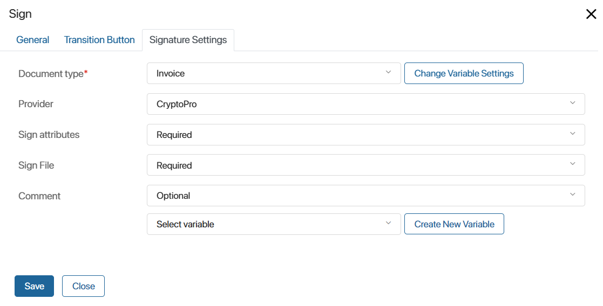
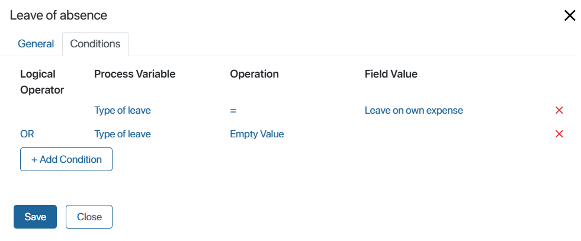

Connectors determine the order of activities and events in the process. Naming connectors improves the readability of the flow chart and also serve as button names on task forms.
For example, the task Fill in leave request has two outgoing connectors, Send for approval and End process.

On the task form, these connectors look like this:

Create and set up a connector
To connect items, hover over one of them, and then, holding down the left mouse button, draw a connection line from one of the points located on its edges.
To open the settings of a connector, double-click on it in the process diagram.
On the General tab in the settings, you can rename the connector and add its description. Additional settings depend on what element the connector is going out of:
- Task. You can select the color of the button, configure data validation, specify the type of the connector and enable signing of the app item.
- Gateway. You can set the conditions of the process transition to a particular path.
Let’s consider all the settings in detail below.
General tab

- Name. Specify the name to be displayed on the connector button in the task.
- Description. Enter the text of the tooltip that will be shown on the task form.

Connector going out of a standard task
For connectors going out of Tasks, you can choose the color of the button, as well as set parameters for checking data in the task, confirming the transition, signing the app item, etc.
Transition Button tab

- Transition Button Color. Select the color of the button that will be displayed on the task form.

- Transition Validation. Select a validation option. The task will be validated when the user clicks on the transition button.
- Validate task form. The user will not be able to finish the task without filling out all required fields on the task form.
- Check for active subtasks. The user will not be able to finish the task if there are unfinished subtasks associated with it.
You can select both options or entirely disable form validation.
- Confirmation. You can set up a confirmation dialog box that will appear when the user clicks on the transition button. Select one of the following options:
- Without confirmation. The task will be finished as soon as the user clicks on the transition button, without confirmation.
- Confirmation Dialog Box. Specify the window size and enter the confirmation text in the fields that appear below.

- Form. Set up a complex confirmation form and add process context variables to it. For example, you can ask a user to leave a comment before finishing the task. Select the dialog box, specify the confirmation text, and click the Configure Form button to add new fields to the form.
On the opened Form Settings tab, select a variable from the process context or add a new one.
- Signature. Select this connector to customize the window for signing the app item with which the task has been associated. The Signature Settings tab will be added. On this tab, define the app item and its signing parameters.
Signing in a connector going out of a task. Signature Settings tab
You can enable signing in the settings of a connector going out of a task. Use this option when a task is assigned for an app item. In this case, the user will sign the item and complete the task in one action. At the same time, you can sign attributes and a document file, leave a comment, or change the provider.

Setting up signing in a connector going out of a task requires some preliminary steps:
- Create a context variable of the App type that will store the item to be signed. It is filled in by the user on the task form on which you are customizing the connector, or it can be filled in previous steps of the process.
- On the task form, add fields to select, create, or change the attributes of the app item to be signed. If the item is set before the process goes to the current task, display its value in the task.
For example, a user starts an application process and is assigned with a task in which the user creates the Application app item. Then on the form of the same task the user clicks the Sign Application button. In the signing window that opens, they select the certificate and click Sign. After that, the process moves to the next step and the signature information will be displayed in the application page.
Please note that you can also configure the app item signing using the Sign activity. Keep in mind the following differences between the two signing options:
- Only two resolutions are available in the Sign activity, sign or reject. You can add additional connectors in the task, for example, send for revision, sign with comments, delegate signing.
- In the Sign activity, toy can only the view the item. In a task, the user can create or select a document and sign it immediately. In this way, the path to the result is shortened, two actions are performed in one activity.
Important: the user must have an electronic signature certificate of one of the providers available in the system installed on their computer. Also enable the modules of providers whose certificates will be used by employees. Read more in the Set up digital signatures article.
On the Signature Settings tab, fill in the fields:

- Document type*. Select the variable that specifies the app item to be signed.
- Provider. Select the provider whose certificate will be applied for signing by default.
- Sign attributes. Set whether it is mandatory to sign the attributes of the app item:
- Do not use. When signing the app item, the attributes will not be signed.
- Optional. The user will be able to define the type of signing: with or without attributes. By default, attribute signing is disabled. To enable it, the Attributes option must be checked in the item signing window.
- Preferred. The user will be able to define the signing method. By default, attribute signing is enabled. In the signing window the user will be able to turn off the Attributes option.
- Required. When signing an app item, the user will automatically sign the attributes.
- Sign file. If an app item of the Document type is set for signing, the option to sign its file will be displayed in the signing window. The settings in this field are similar to those of the Sign attributes field.
- Comment. Configure the option to leave a comment on the signature. Select an option from the list: Do not use, Optional, Preferred, or Required. You can also save the user's comment to a context variable. To do this, select or create it in the field below.
Connector going out of a gateway or a multiple instance task
For connectors that go out of gateways or multiple instance tasks, the Conditions button becomes available. The process will go down one path or another depending on the connector conditions.
Conditions tab

- Process Variable. Specify a variable from the process context. Certain values are available for connectors going out of certain tasks, for example, for the Approval activity you can specify the percentage of approval or rejection.
- Operation. Specify a comparison operator to check a specific condition.
- Field Value. Enter the value at which the condition will be executed.
- Logical Operator is used to determine how several conditions are checked. If the result evaluates to True, the process continues down this connector:
- AND. The result is True if both conditions that this operator connects are met.
- OR. The result is True if at least one of the conditions that this operator connects is met.
- OR NOT. The result is True if the first condition is met and does not correspond with the second condition.
- AND NOT. The result is True if one condition is met or the other one is not met.
For more information about using connectors with conditions in processes, see the Connector use cases article.
Please note that the conditions are checked in the order they are listed in the connector settings.
In multiple instance tasks, conditions are checked each time one of the executors completes the task.
If you don’t specify conditions for the connectors going out of a gateway or a multiple instance task, you will see a warning at the bottom of the page when validating the process.